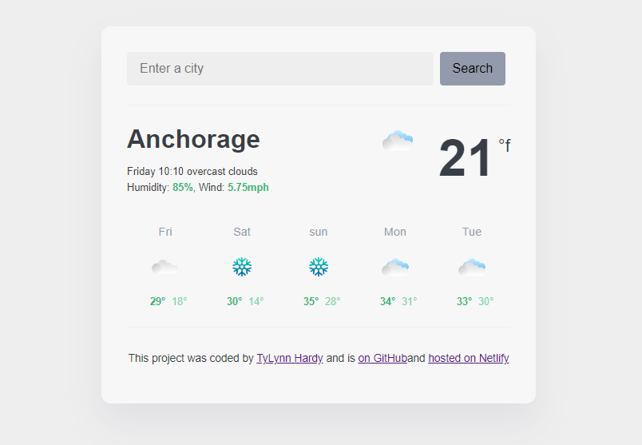

Weather Project
This project was my weather app project. You are able to search for any city to get the weekly weather report. This was a very fun and interesting project to work on. I learned a lot doing this project as well and definitely enjoyed it. To view this project please click the button below.
Learn More


World clock Project
This project was my world clock project. It shows the times for multiple locations. This was a crazy and challenging project to work on as time is not the easiest to use. It was a great experience doing this and I learned so much! To view this project please click the button below.
Learn More